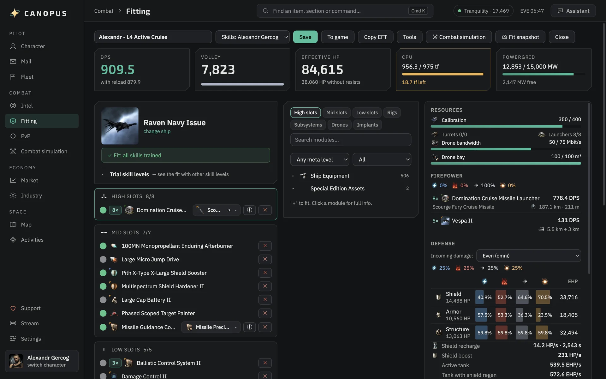
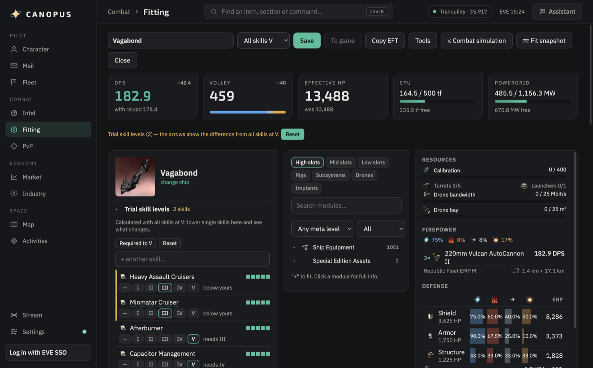
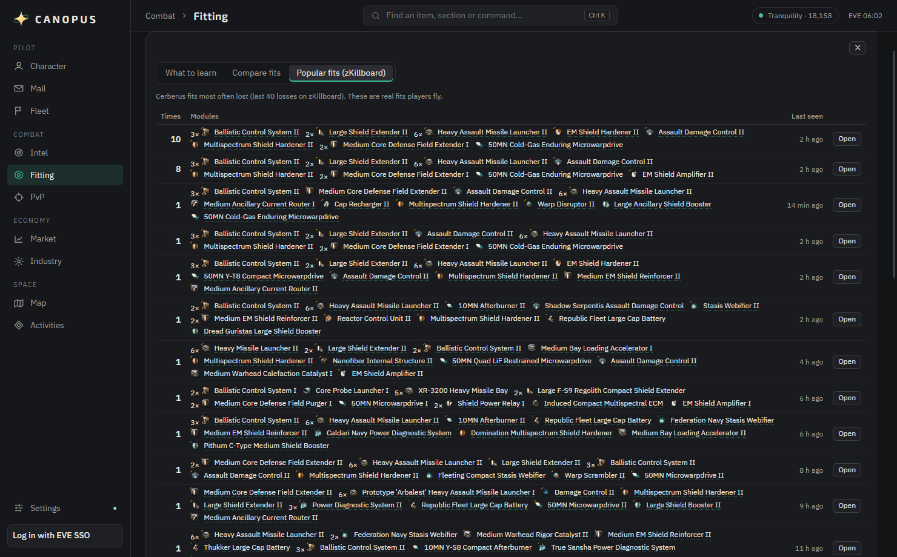
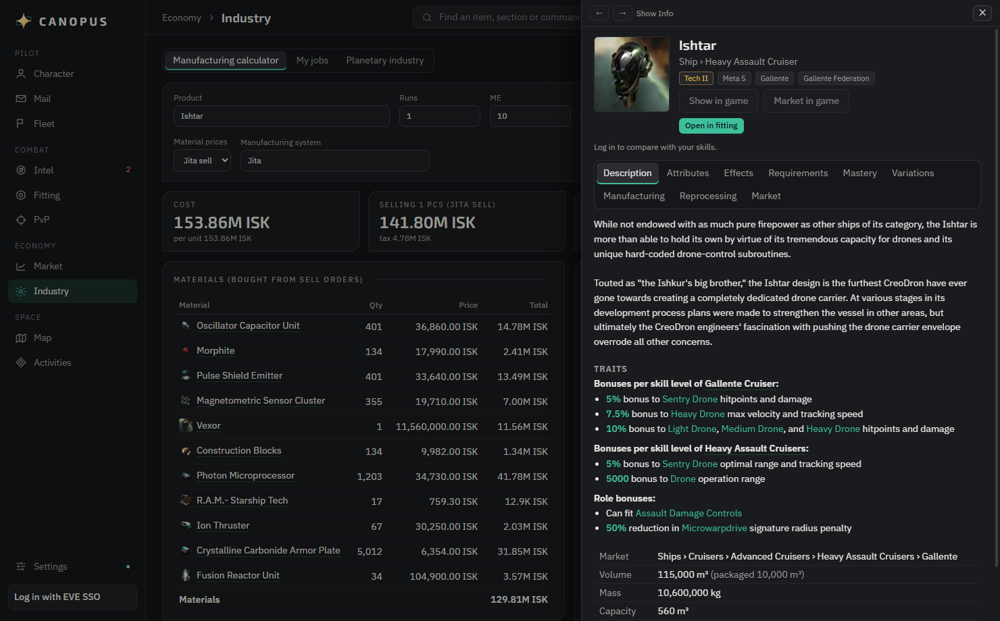

Fitting tool
Everything you theorycraft with, on the same numbers: a dogma engine driven by CCP’s game data, checked against Pyfa 2.69.3 on 44 fits with no differences. Import all your Pyfa fits at once.
Every stat, live
The numbers you check first — DPS, volley, EHP, CPU and powergrid — are always on top. Hover a module in the list and every stat updates in place, with the difference highlighted.
- Skills, hull and role bonuses, subsystems, module states (offline, online, active, overheated), charges, drones, implants and stacking penalties
- Calculate with all skills V, IV, III or I or with your character’s skills: what to train and how long it takes
- Only modules that fit the ship are offered; turret and launcher hardpoints are enforced
- Fit cost at Jita, side-by-side comparison and popular fits from zKillboard

Pay less for the same fit
The price optimizer swaps each module for a cheaper version only when nothing it does gets worse: the fit’s numbers and the module’s own — a scrambler’s range, a web’s strength, a guidance computer’s bonuses.
- Allow no loss, or up to 2, 5 or 10% — what each swap costs you is named in the game’s own words
- All versions: every version of a module side by side, as Pyfa’s Compare, with why each is or isn’t offered
- Or the other way: the upgrades that add the most to a chosen stat per million ISK
- Prices from the cheapest 5% of the volume on sale in Jita, not one cheap listing; thin markets are flagged

Damage graph and ammo table
Applied DPS over distance, the target’s speed or its signature: target presets, your own speed and heading, your webs and painters counted where they reach, drone control range, up to four fits on one graph.
- Ammo table — every charge your weapons take side by side, and the one that lands most on the chosen target
- Incoming damage profiles — omni, one type, your own profiles, or what each mission NPC faction really shoots; the reactive armor hardener settles to it
- Fleet boosts from a booster you pick or a saved booster fit, read from CCP’s buff data
- Effects from other ships: webs, painters, remote repairs, neutralizers, dampeners, tracking and guidance disruptors (with scripts) and ECM
- All 300 combat boosters in the game; tactical destroyer modes, Triglavian disintegrators, Vorton projectors, smartbombs, Bastion and siege, ancillary repairers
Try a skill before you train it
Set skills to trial levels and see what they change in the fit: arrows on the numbers show the difference from all skills at V.
- Fit snapshot: the whole fit and its stats on one picture

Popular fits from zKillboard
The fits players really fly on the same hull, from recent losses on zKillboard — open any of them in the fitting tool with one click.

Show Info for everything
Every ship, module and skill opens a panel like the game’s: attributes with their icons, a readable Effects tab, the skill tree with your levels, variations, reprocessing and hub prices.
- Import and export EFT (mutated modules included) and Pyfa’s XML
- Open fits from your character, current ship, a killmail or Show Info
- Save a fit straight to your in-game fittings

Fight the battle before you undock
Free, no ads, no subscriptions. Windows, macOS and Linux — and a separate app for iPhone and iPad.